Twenty-five people of their own, five a chapter, in place of the heroes who used to stand in the camps (the user, 2026-11-14:
"make new models for npc, don't reuse them from heroes"). In each chapter the keeper stands on all ten floors; the quest giver at the
camp and the one out in the land each keep their own lines; the two traders take turns, odd floors and even floors. Rivals and
gatekeepers are still heroes: they are fights against a hero. Built like the heroes (the pack's body on the animation pack's
skeleton, blender/tower), each 450 to 550 KB.
The Sea floors 1 to 10 · navy and sea-green, the harbour's wine, sea-glass light
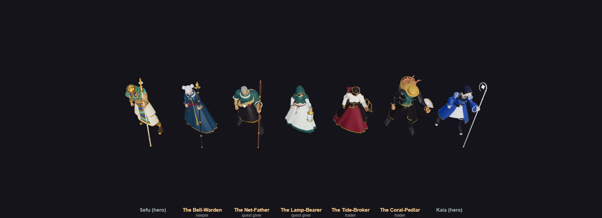
From the game's camera, beside the heroes Sefu and KaiaFrom the front
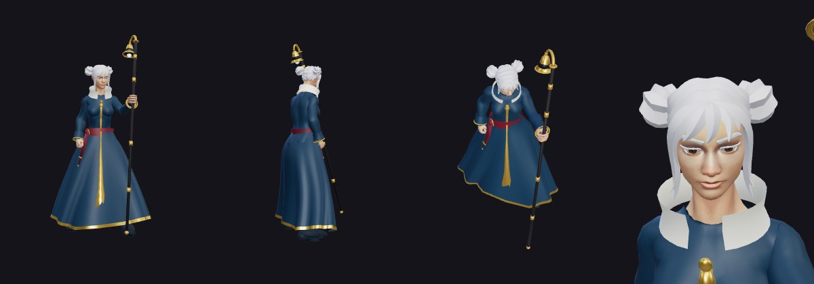
The Bell-WardenKeeper (all ten floors, the main quest)She rings the harbour bell that calls the drowned ships home.The Net-FatherQuest giver at the campThe old fisher who mends the nets that hold the sea back from the town.The Lamp-BearerQuest giver out in the landShe keeps the shore lamps that tell the boats where the land begins.
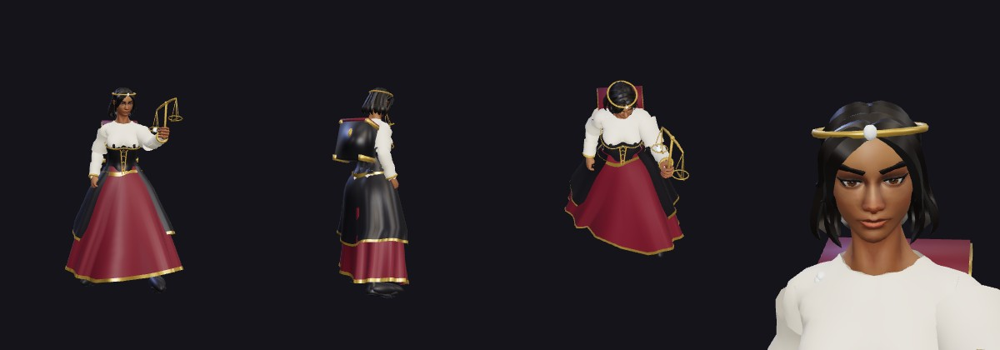
The Tide-BrokerTrader Stands on the odd floors.She weighs what the tide gives back and sells it to climbers.The Coral-PedlarTrader Stands on the even floors.He sells what grows on the drowned reef, and carries the reef on his back.
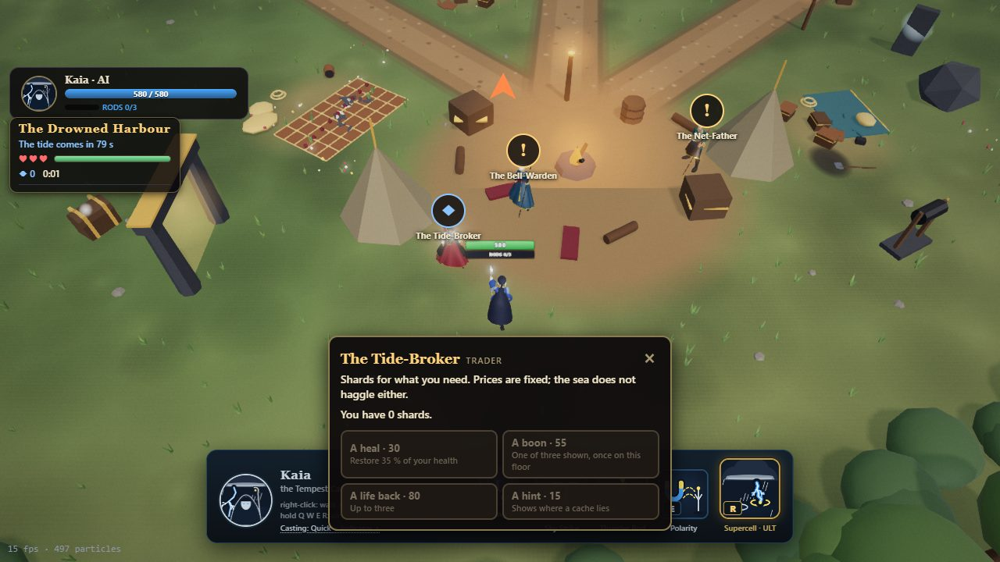
In the game: the camp of floor 1, the keeper's card open
The Wood floors 11 to 20 · forest and moss greens, bark brown, amber light
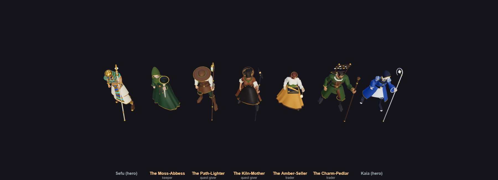
From the game's camera, beside the heroes Sefu and Kaia
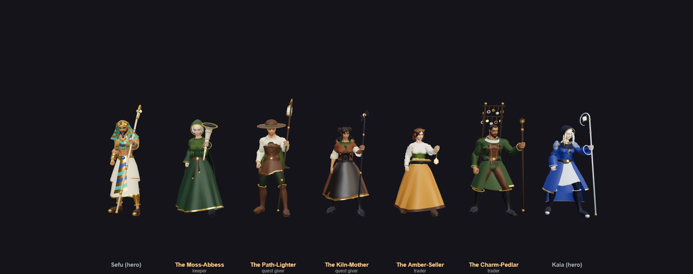
From the front
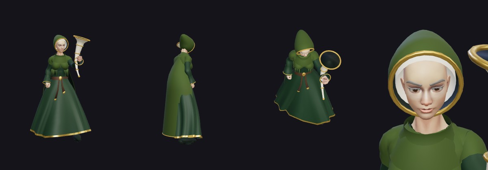
The Moss-AbbessKeeper (all ten floors, the main quest)She sounds the horn that keeps the walking wood asleep.
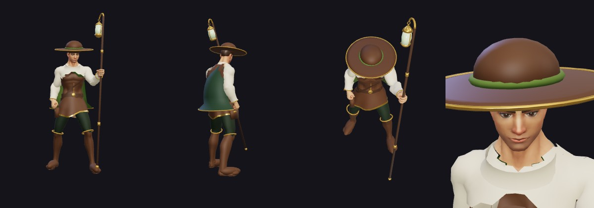
The Path-LighterQuest giver at the campHe lights the spore lamps that show where the wood's paths have moved to.The Kiln-MotherQuest giver out in the landShe tends the charcoal stacks whose smoke keeps the hounds of the wood away.The Amber-SellerTrader Stands on the odd floors.She sells the wood's amber, the old resin with the forest's memories caught in it.
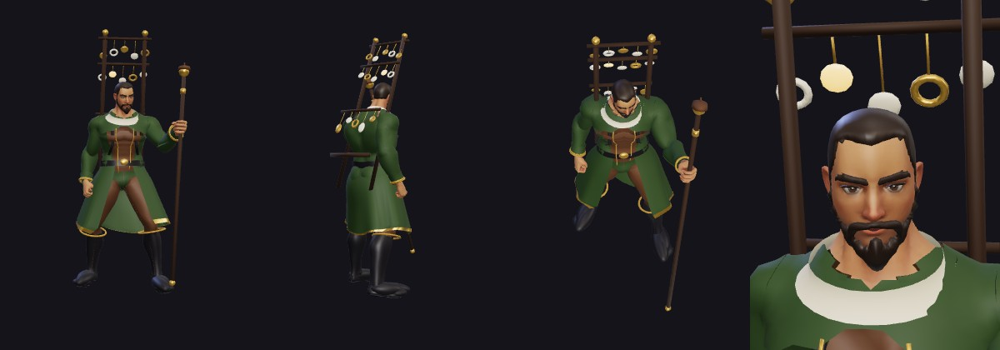
The Charm-PedlarTrader Stands on the even floors.He walks the wood's moving paths with a frame of carved charms that the wood lets pass.
In the game: the camp of floor 11, the keeper's card open
The Sands floors 21 to 30 · night indigo, terracotta, turquoise and saffron
From the game's camera, beside the heroes Sefu and Kaia
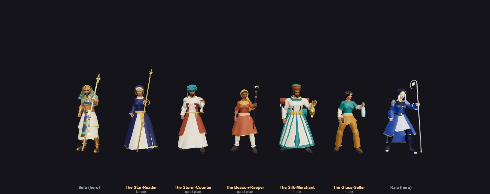
From the front
The Star-ReaderKeeper (all ten floors, the main quest)She reads in the night sky which way the storms will walk, and sends climbers by the roads they leave open.The Storm-CounterQuest giver at the campHe keeps the count of the storms, every one, by the sand that runs through his glass, and the caravans move by his word.The Beacon-KeeperQuest giver out in the landShe keeps the watch fires that warn the road of a storm coming.The Silk-MerchantTrader Stands on the odd floors.The master of the last caravan, who sells from its bales the road has not taken.The Glass-SellerTrader Stands on the even floors.She gathers the glass the lightning leaves in the dunes and sells it by the light it still holds.
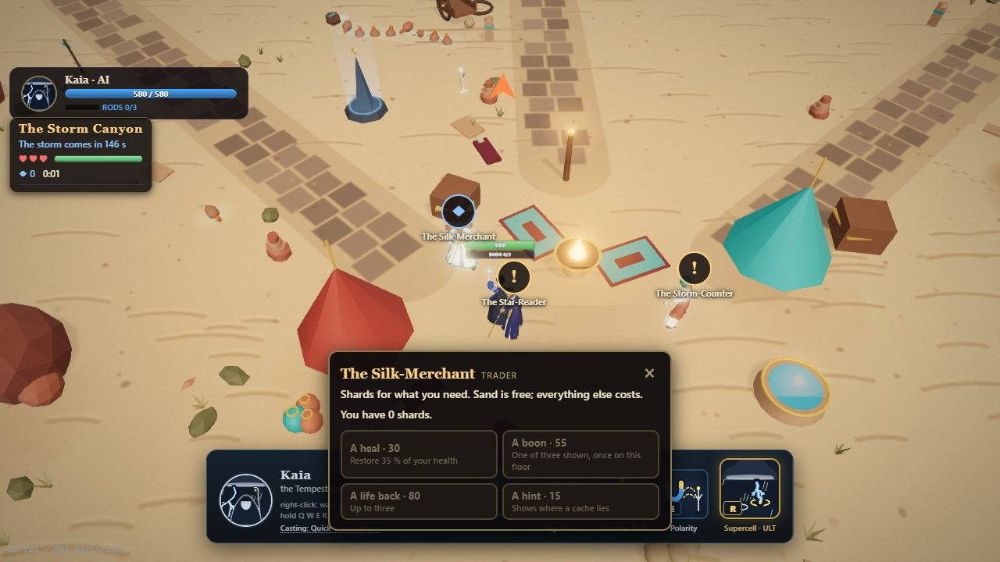
In the game: the camp of floor 21, the keeper's card open
The Deep floors 31 to 40 · slate and violet, silver, cold mint and lavender light
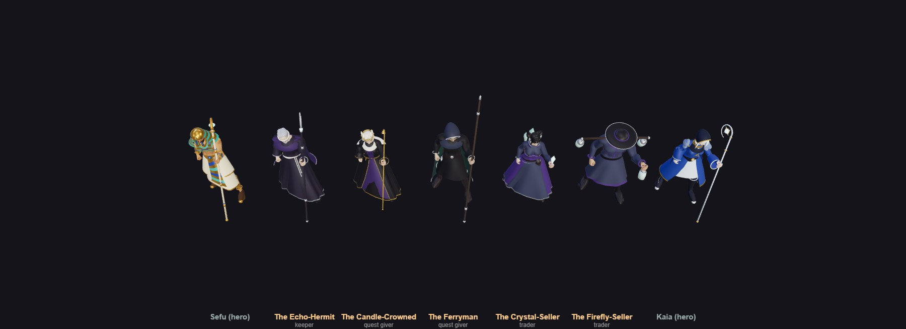
From the game's camera, beside the heroes Sefu and Kaia
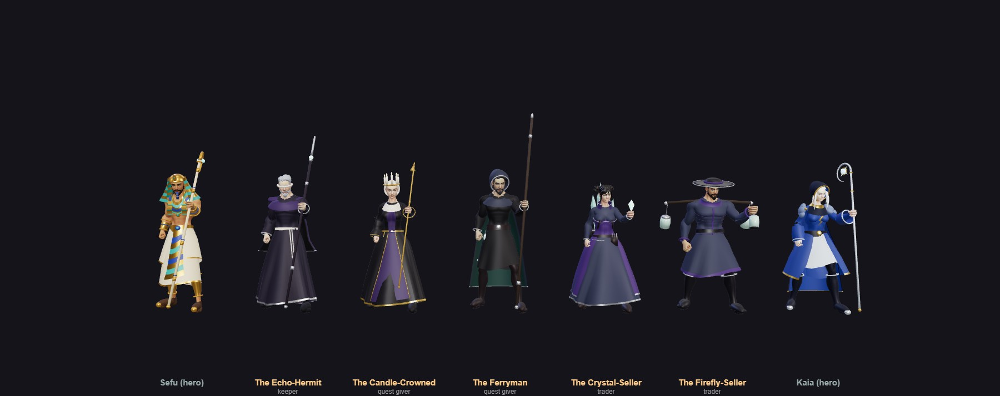
From the front
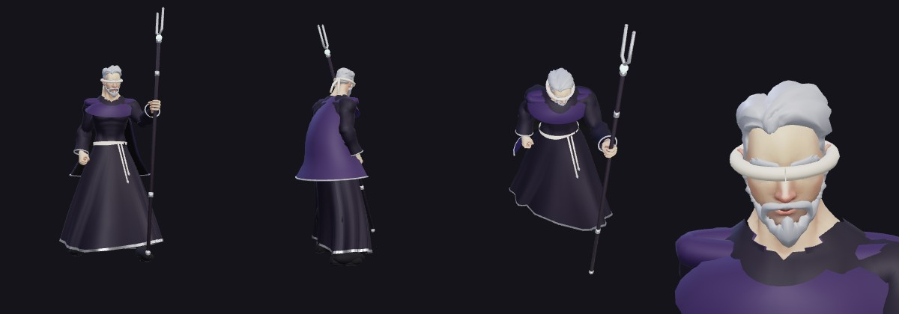
The Echo-HermitKeeper (all ten floors, the main quest)Blind for longer than anyone remembers, he finds the way through the dark halls by the echoes of his staff.
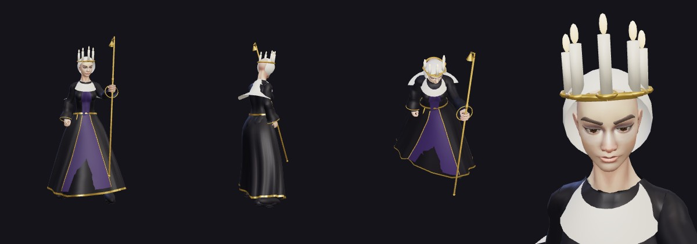
The Candle-CrownedQuest giver at the campShe keeps the last candles of the Deep burning, and wears them, so that wherever she walks there is a little light.The FerrymanQuest giver out in the landHe poles the one boat across the lake under the mountain, and brings back those who went too far down.
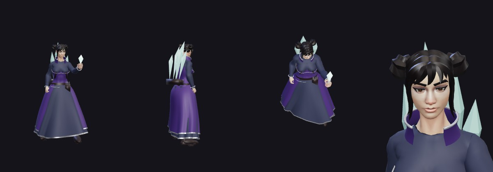
The Crystal-SellerTrader Stands on the odd floors.She cuts the Deep's crystals and sells light by the facet.
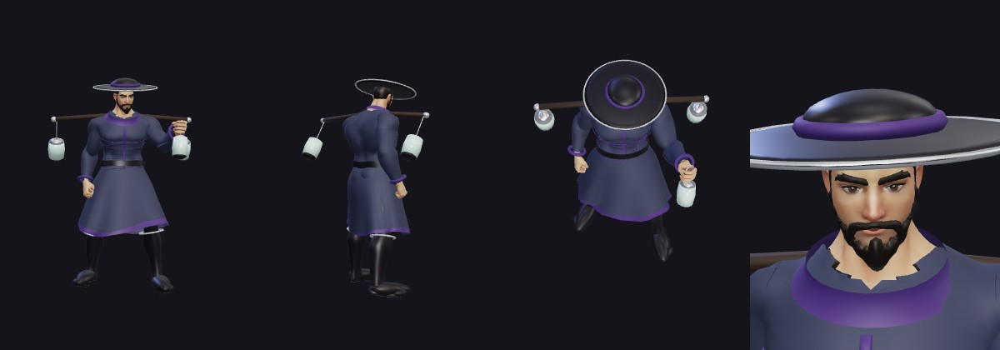
The Firefly-SellerTrader Stands on the even floors.He sells living light, the fireflies of the deep caves, by the jar.
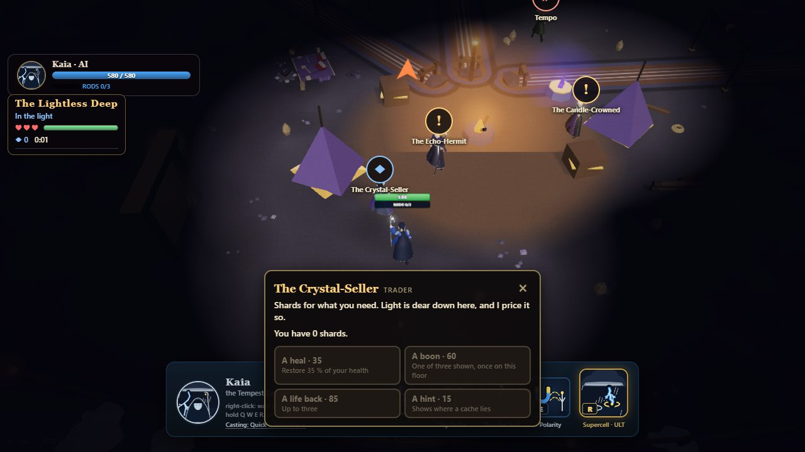
In the game: the camp of floor 31, the keeper's card open
The War floors 41 to 50 · the two banners' crimson and azure, iron grey, white
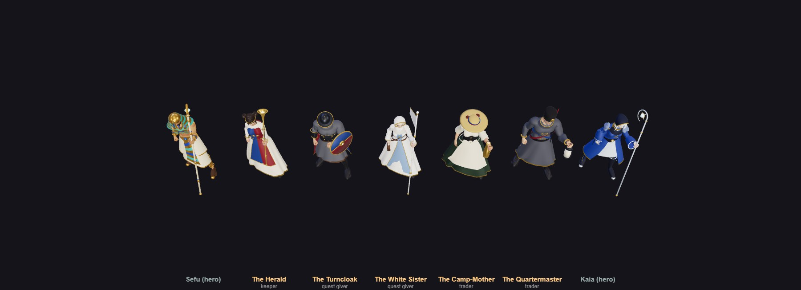
From the game's camera, beside the heroes Sefu and KaiaFrom the front
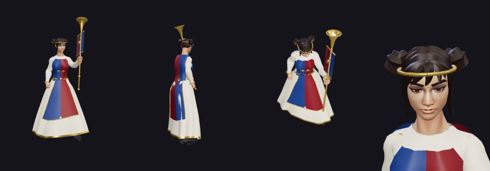
The HeraldKeeper (all ten floors, the main quest)She speaks for both armies, the only voice either side still lets cross the field.
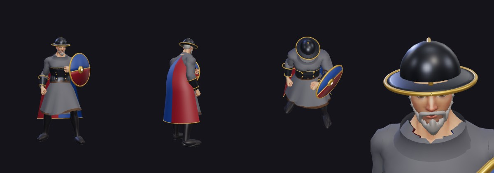
The TurncloakQuest giver at the campHe fought for both banners, one after the other, and now keeps his head down between them.The White SisterQuest giver out in the landShe mends whoever is carried in, whatever the colour of their banner.
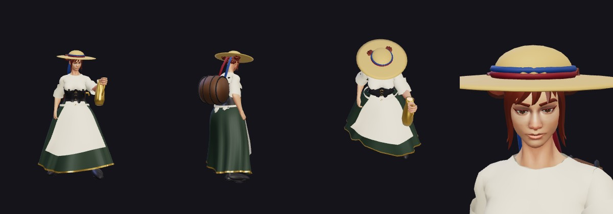
The Camp-MotherTrader Stands on the odd floors.She feeds both armies from one fire and takes both armies' shards.The QuartermasterTrader Stands on the even floors.He keeps the stores that both armies left behind, and opens them for shards.
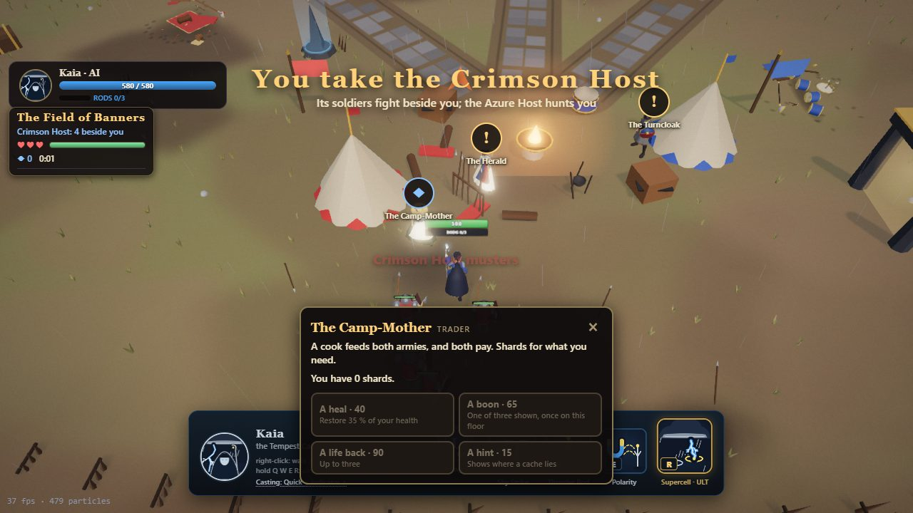
In the game: the camp of floor 41, the keeper's card open